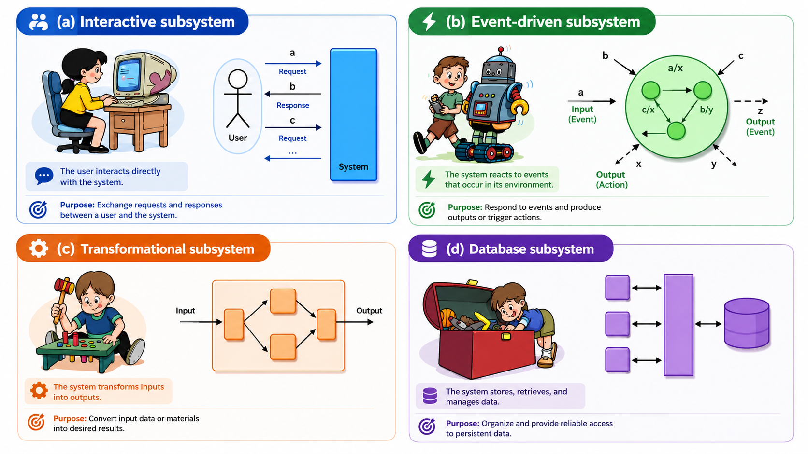

Know Your System Type
Before choosing an architecture, classify the dominant behavior. Different kinds of systems need different design methods.
Distinguish interactive, event-driven, transformational and object-persistence systems using their characteristic flows, actors, state and timing behavior.
Do not classify by name — classify by behavior
Interactive System
Actor-system interaction carries out a business task through a relatively fixed sequence of requests and responses.
Event-Driven System
External events arrive without a fixed request order; response depends on the current system state.
Transformational System
A network of processing activities transforms input into substantially different output, usually with little actor interaction during processing.
Object-Persistence System
Provides efficient storage, retrieval and update of persistent objects while hiding storage implementation from other subsystems.

What changes from one type to another?
| Question | Interactive | Event-Driven | Transformational | Persistence |
|---|---|---|---|---|
| Primary stimulus | Actor requests | External events | Input data | Storage/retrieval requests |
| Sequence | Relatively fixed | Not fixed | Processing flow | Operation-driven |
| State role | Tracks business-process progress | Determines response | Usually stateless | Persistent data state |
| Actor interaction | Frequent | Often devices/software | Little during processing | Supports other subsystems |
A large system can contain all four
A system can be a subsystem of a larger system, and one system can contain several subsystem types. Classification is therefore relative to the subsystem being designed.
May contain many behavioral types.
Could be interactive.
Could be event-driven.
Could be transformational.
Could be persistence-focused.
The examples above are study clarifications; the four behavioral definitions and recursive-system rule come from the supplied lecture.
Human dialogue → Interactive. Reactive signals → Event-driven. Input becomes output → Transformational. Data survives → Persistence.